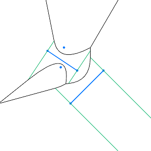

Voronoi 基础教程
在本教程中, 我们将介绍 Boost.Polygon Voronoi 库的基本用法, 对 95% 的情况而言这些内容应该足够了. 下面我们将讨论以下主题:
- 准备输入几何
- Voronoi 图构建
- Voronoi 图遍历
- 将用户数据与 Voronoi 原语关联
- 在 Voronoi 单元内访问输入站点
- Voronoi 图渲染
在贯穿本教程的示例 (voronoi_basic_tutorial.cpp) 中, 我们将构造若干点和线段的 Voronoi 图. 在下图中可以看到对应的已渲染 Voronoi 图. 主 Voronoi 边用黑色标出, 非主边用绿色标出, 输入几何为蓝色. 我们把每条输入线段拆分为三个站点 (线段本身及其两个端点), 对应同一条线段的站点之间的边被视为非主边.

在继续之前, 别忘了:
#include "boost/polygon/voronoi.hpp"
using boost::polygon::voronoi_builder;
using boost::polygon::voronoi_diagram;
准备输入几何
下面展示了用户提供的点类与线段类的示例:
struct Point {
int a;
int b;
Point (int x, int y) : a(x), b(y) {}
};
struct Segment {
Point p0;
Point p1;
Segment (int x1, int y1, int x2, int y2) : p0(x1, y1), p1(x2, y2) {}
};
由于我们将使用 voronoi.hpp 头文件中定义的默认例程来构造 Voronoi 图, 需要把我们的点类与线段类映射到相应的 Boost.Polygon 概念:
template <>
struct geometry_concept<Point> { typedef point_concept type; };
template <>
struct point_traits<Point> {
typedef int coordinate_type;
static inline coordinate_type get(const Point& point, orientation_2d orient) {
return (orient == HORIZONTAL) ? point.a : point.b;
}
};
template <>
struct geometry_concept<Segment> { typedef segment_concept type; };
template <>
struct point_traits<Segment> {
typedef int coordinate_type;
typedef Point point_type;
static inline coordinate_type get(const Segment& segment, direction_1d dir) {
return dir.to_int() ? segment.p1() : segment.p0();
}
};
也可以使用 Boost.Polygon 的原生类型 point_data 和 segment_data, 这样就不需要上面的映射.
这样完成之后, 我们就可以创建示例输入:
std::vector<Point> points;
points.push_back(Point(0, 0));
points.push_back(Point(1, 6));
std::vector<Segment> segments;
segments.push_back(Segment(-4, 5, 5, -1));
segments.push_back(Segment(3, -11, 13, -1));
Voronoi 图的构建
至此, 我们可以构造 Voronoi 图了:
voronoi_diagram<double> vd;
construct_voronoi(points.begin(), points.end(), segments.begin(), segments.end(), &vd);
遍历 Voronoi 图
Voronoi 图遍历是构造出 Voronoi 图之后想做的基本操作. 有三种方式可以实现, 我们将逐一介绍:
- 简单地迭代所有 Voronoi 边 (每条边被计数两次):
int iterate_primary_edges1(const voronoi_diagram<double> &vd) {
int result = 0;
for (voronoi_diagram<double>::const_edge_iterator it = vd.edges().begin();
it != vd.edges().end(); ++it) {
if (it->is_primary())
++result;
}
return result;
}
- 迭代所有 Voronoi 单元, 然后遍历每个单元周围的边 (每条边被计数两次):
int iterate_primary_edges2(const voronoi_diagram<double> &vd) {
int result = 0;
for (voronoi_diagram<double>::const_cell_iterator it = vd.cells().begin();
it != vd.cells().end(); ++it) {
const voronoi_diagram<double>::cell_type &cell = *it;
const voronoi_diagram<double>::edge_type *edge = cell.incident_edge();
// 这是迭代 Voronoi 单元周围各边的一种便捷方式.
do {
if (edge->is_primary())
++result;
edge = edge->next();
} while (edge != cell.incident_edge());
}
return result;
}
- 迭代所有 Voronoi 顶点, 然后遍历每个顶点周围的边 (遍历每条边的次数等于该边有限端点的数量):
int iterate_primary_edges3(const voronoi_diagram<double> &vd) {
int result = 0;
for (voronoi_diagram<double>::const_vertex_iterator it = vd.vertices().begin();
it != vd.vertices().end(); ++it) {
const voronoi_diagram<double>::vertex_type &vertex = *it;
const voronoi_diagram<double>::edge_type *edge = vertex.incident_edge();
// 这是迭代 Voronoi 顶点周围各边的一种便捷方式.
do {
if (edge->is_primary())
++result;
edge = edge->rot_next();
} while (edge != vertex.incident_edge());
}
return result;
}
这应该能让人很好地了解如何进行 Voronoi 图遍历. 注意, 虽然前两种方法的输出应当相同, 第三种却不然. 原因是最后一种情况下我们只对只有一个有限端点的边迭代一次, 并跳过所有没有有限端点的边.
将用户数据与 Voronoi 原语关联
下面是几个将用户数据与 Voronoi 原语关联的简单例子:
- 将关联边数与每个单元、顶点关联;
- 将颜色信息与每条边关联;
- 在 Voronoi 图上使用 DFS 或 BFS 需要标记已访问的边/顶点/单元.
我们考察第一个例子, 将关联边的总数与每个单元关联.
注意: 每个 Voronoi 原语都包含可变的 color 成员, 可以将其用于图算法, 或通过数组下标关联用户数据.
// 使用 Voronoi 原语的 color 成员存储每个单元周围
// 的平均边数 (包括次级边).
{
printf("Number of edges (including secondary) around the Voronoi cells:\n");
for (voronoi_diagram<double>::const_edge_iterator it = vd.edges().begin();
it != vd.edges().end(); ++it) {
std::size_t cnt = it->cell()->color();
it->cell()->color(cnt + 1);
}
for (voronoi_diagram<double>::const_cell_iterator it = vd.cells().begin();
it != vd.cells().end(); ++it) {
printf("%lu ", it->color());
}
printf("\n");
printf("\n");
}
访问 Voronoi 单元内的输入站点
正如Voronoi 图 一节所解释的, Voronoi 单元并不直接包含输入几何的坐标, 而是包含唯一标识输入站点的源索引和源类别. 下面的例程遍历所有 Voronoi 单元, 获取与 Voronoi 单元对应的输入几何, 并打印输入站点的坐标.
unsigned int cell_index = 0;
for (voronoi_diagram<double>::const_cell_iterator it = vd.cells().begin();
it != vd.cells().end(); ++it) {
if (it->contains_point()) {
if (it->source_category() ==
boost::polygon::SOURCE_CATEGORY_SINGLE_POINT) {
std::size_t index = it->source_index();
Point p = points[index];
printf("Cell #%u contains a point: (%d, %d).\n",
cell_index, x(p), y(p));
} else if (it->source_category() ==
boost::polygon::SOURCE_CATEGORY_SEGMENT_START_POINT) {
std::size_t index = it->source_index() - points.size();
Point p0 = low(segments[index]);
printf("Cell #%u contains segment start point: (%d, %d).\n",
cell_index, x(p0), y(p0));
} else if (it->source_category() ==
boost::polygon::SOURCE_CATEGORY_SEGMENT_END_POINT) {
std::size_t index = it->source_index() - points.size();
Point p1 = high(segments[index]);
printf("Cell #%u contains segment end point: (%d, %d).\n",
cell_index, x(p1), y(p1));
}
} else {
std::size_t index = it->source_index() - points.size();
Point p0 = low(segments[index]);
Point p1 = high(segments[index]);
printf("Cell #%u contains a segment: ((%d, %d), (%d, %d)). \n",
cell_index, x(p0), y(p0), x(p1), y(p1));
}
++cell_index;
}
Voronoi 图渲染
有两个主要问题使得无法使用 OpenGL 或 DirectX 之类的渲染工具严格地渲染所得到的 Voronoi 图. 它们是:
- 有些 Voronoi 边是无限的, 因此需要裁剪;
- 有些 Voronoi 边是抛物弧, 因此需要离散化.
注意: 这不仅是渲染工具的问题. 基本上任何需要把图表示为有限线段集合的任务都属于这一类. voronoi_visualizer.cpp 中包含一个使用 Qt 库的、功能完备的 Voronoi 图渲染器的简单实现. boost/libs/polygon/example 目录下的所有 .png 图都是用它生成的.
小结
希望读者能够读到这里, 并觉得这个基础教程有用 (毕竟它其实并不那么基础). 值得注意的是, 构造 Voronoi 图只需要两行代码, 其余工作都是关于初始化输入数据结构、遍历 Voronoi 图以及把数据与图原语关联. 在默认模式下, Voronoi 图使用带符号 int (32 位) 输入坐标类型和 double (64 位) 输出坐标类型. 在Voronoi 进阶教程 中, 我们解释了为什么这对 95% 的情况已经足够, 以及如何为其余 5% 的情况扩展算法的坐标类型.